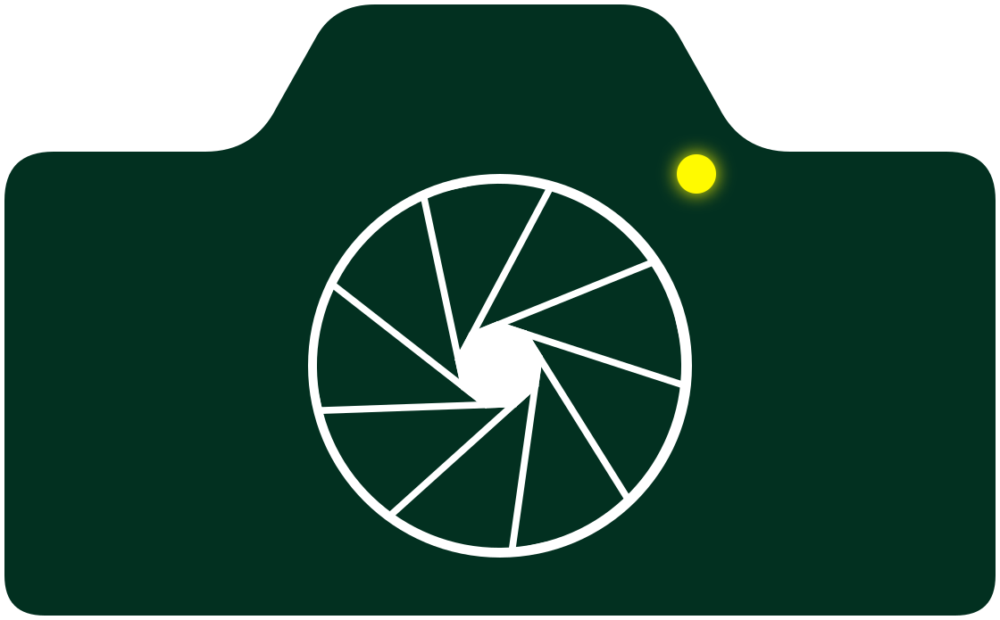

Branding, Logos & Icons
1- Logos & Wordmarks
- Typography
- Color Palettes
- Custom Icons
- Social Media Graphics
Photo Credit:
Ahmed Madhi
Great Blue Heron
Lake Braddock, Fairfax County, Virginia


Need a logo that works across different platforms? I can create coordinated logo variations that remain recognizable across backgrounds and formats.
Explore More Branding, Logos & IconsAn interactive airport network visualization combining major U.S. and international airport locations, airport-code cross-highlighting, and visual airport browsing. Hover airport dots or airport codes to cross-highlight locations. The streamlined demo uses 10 U.S. and 10 international airports; hover the image reel to pause it.
Explore More User Interfaces

A web-ready SVG record player concept using SVG, CSS animation, JavaScript, and audio.
Use the start control to spin the record, move the tonearm, and play audio.
An animated SVG camera graphic featuring an aperture lens and blinking status light.
Explore More Motion GraphicsA responsive photography storefront concept organizing airport imagery into clear Airside, Terminal, Landside, and Other collections.
Responsive landing page, Collection-based navigation, Portfolio and print storefront foundation.


The right photograph can establish a mood, suggest a story, and make a page feel distinctive. I can help select imagery from my portfolio and shape its crop, placement, and supporting words around your business and layout.
Explore More PhotographyPeople should be able to understand what you offer, why it matters, and what to do next. I write focused copy that gives your message structure and helps your website, imagery, and brand speak with one voice. A compelling hero section needs more than an attractive photograph, so I can pair the right image with a headline, supporting copy, and a crop that gives the words room to work.
Explore More Copywriting